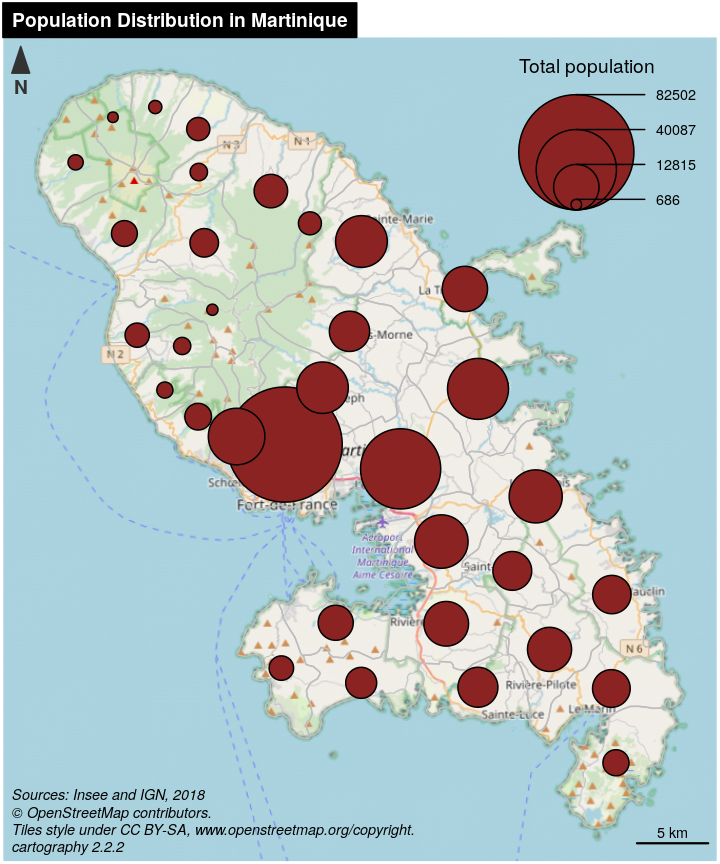
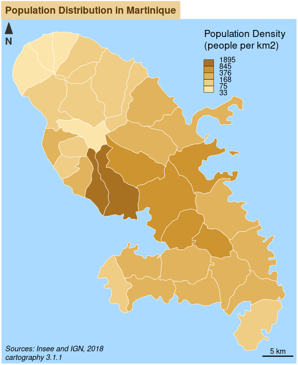
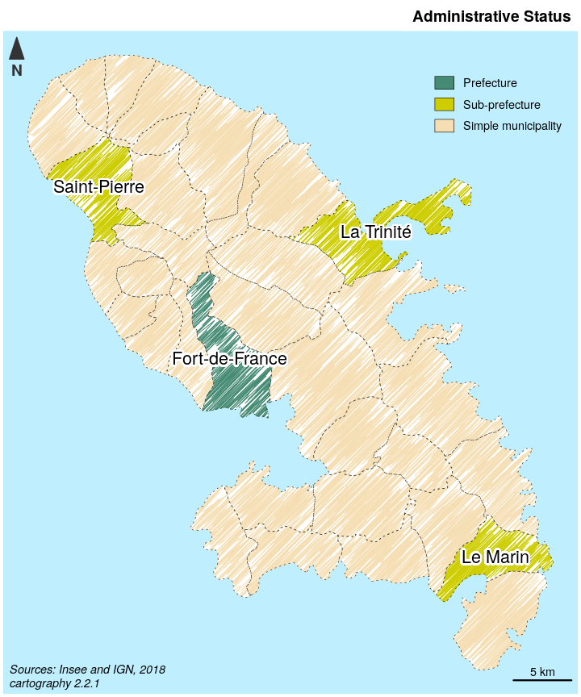
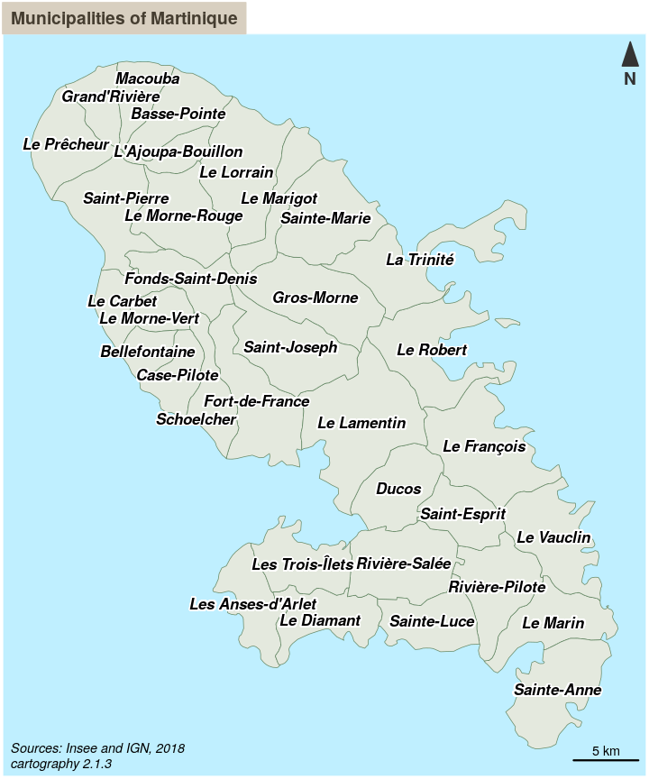
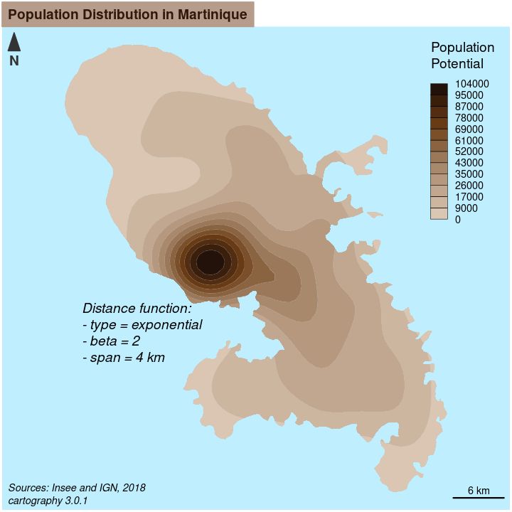
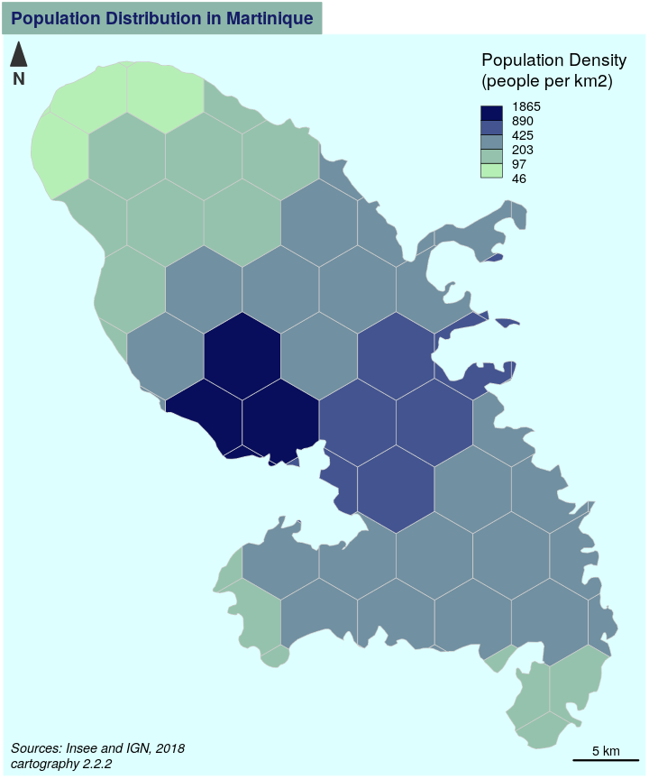
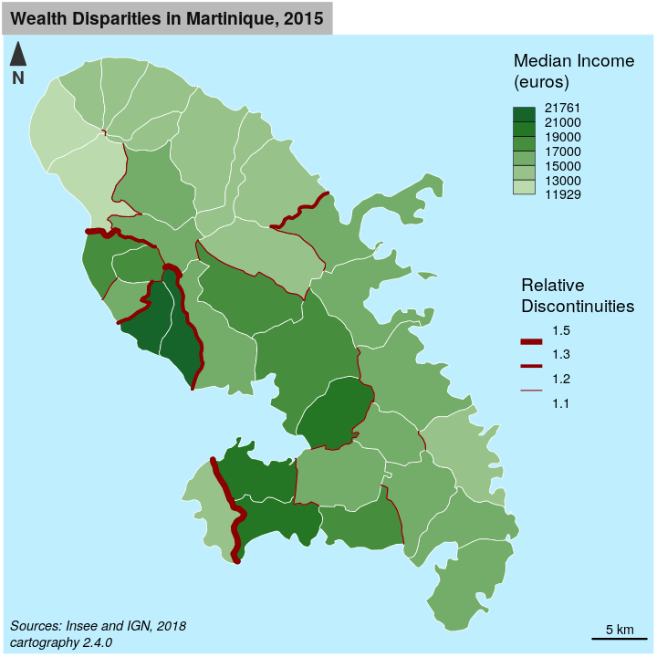
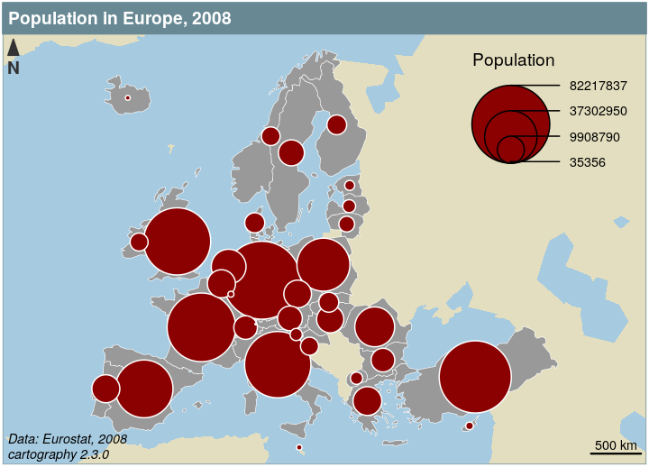

vignettes/cartography.Rmd
cartography.RmdThe aim of cartography is to obtain thematic maps with the visual quality of those build with other common mapping and GIS software.
Users of the package could belong to one of two categories: cartographers willing to use R or R users willing to create maps. Therefore, its functions have to be intuitive to cartographers and ensure compatibility with common R workflows.
cartography uses sf or sp objects to produces base graphics. As most of the internals of the package relies on sf functionalities, the preferred format for spatial objects is sf.
cartography’s functions can be classified in the following categories :
Symbology (*Layer() functions)
Each function focuses on a single cartographic representation (e.g. proportional symbols or choropleth representation) and displays it on a georeferenced plot. This solution allows to consider each representation as a layer and to overlay multiple representations on a same map.
Each function has two main arguments that are:
x, a spatial object (preferably an sf object),var, the name of a variable to map.sp objects are handled through the spdf argument if the variable is contained within the Spatial*DataFrame and through spdf, spdfid, df, dfid if the variable is in a separate data.frame that needs to be joined to the Spatial*DataFrame.
Many parameters are available to fine tune the cartographic representation. These parameters are the common ones found in GIS and automatic cartography software (e.g. classification and color palettes used in choropleth maps, symbols sizes used in proportional symbols maps…).
Legends (legend*() functions)
Legends are displayed by default along cartographic layers but more parameters are available through legend*() functions.
Transformations (get*() functions)
A set of functions is dedicated to the creation or transformation of spatial objects (e.g. borders extraction, grid or links creation). These functions are provided to ease the creation of some more advanced maps that usually need geo-processing.
Map Layout
Along with the cartographic functions, some other functions are dedicated to layout design (e.g. customizable scale bar, north arrow, title, sources or author information…).
Color Palettes
16 original color palettes are shipped within the package. Those palettes can be customized and combined.
getTiles() and tilesLayer() download and display OpenStreetMap tiles. Be careful to cite the source of the tiles appropriately.
propSymbolsLayer() displays symbols proportionals to a quantitative variable (stocks). Several symbols are available (circles, squares, bars). The inches argument is used to customize the symbols sizes.
library(sf)
library(cartography)
# path to the geopackage file embedded in cartography
path_to_file <- system.file("gpkg/mtq.gpkg", package="cartography")
# import to an sf object
mtq <- st_read(dsn = path_to_file, quiet = TRUE)
# download osm tiles
mtq.osm <- getTiles(
x = mtq,
type = "osm",
zoom = 11,
crop = TRUE
)
## Data and map tiles sources:
## © OpenStreetMap contributors. Tiles style under CC BY-SA, www.openstreetmap.org/copyright.
# plot osm tiles
tilesLayer(x = mtq.osm)
# plot municipalities (only borders are plotted)
plot(st_geometry(mtq), col = NA, border = "grey", add=TRUE)
# plot population
propSymbolsLayer(x = mtq, var = "POP", inches = 0.4, col = "brown4",
legend.pos = "topright", legend.title.txt = "Total population")
# layout
layoutLayer(title = "Population Distribution in Martinique",
sources = "Sources: Insee and IGN - 2018\n© OpenStreetMap contributors.\nTiles style under CC BY-SA, www.openstreetmap.org/copyright.",
author = paste0("cartography ", packageVersion("cartography")),
frame = FALSE, north = FALSE, tabtitle = TRUE)
# north arrow
north(pos = "topleft")
In choropleth maps, areas are shaded according to the variation of a quantitative variable. They are used to represent ratios or indices.
choroLayer() displays choropleth maps . Arguments nclass, method and breaks allow to customize the variable classification. getBreaks() allow to classify outside of the function itself. Colors palettes are defined with col and a set of color palettes can be created with carto.pal() (see also display.carto.all()).
library(sf)
library(cartography)
# path to the geopackage file embedded in cartography
path_to_file <- system.file("gpkg/mtq.gpkg", package="cartography")
# import to an sf object
mtq <- st_read(dsn = path_to_file, quiet = TRUE)
# population density (inhab./km2) using sf::st_area()
mtq$POPDENS <- 1e6 * mtq$POP / st_area(mtq)
# plot municipalities (only the backgroung color is plotted)
plot(st_geometry(mtq), col = NA, border = NA, bg = "lightblue1")
# plot population density
choroLayer(
x = mtq,
var = "POPDENS",
method = "geom",
nclass=5,
col = carto.pal(pal1 = "sand.pal", n1 = 5),
border = "grey40",
lwd = 0.5,
legend.pos = "topright",
legend.title.txt = "Population Density\n(people per km2)",
add = TRUE
)
# layout
layoutLayer(title = "Population Distribution in Martinique",
sources = "Sources: Insee and IGN - 2018",
author = paste0("cartography ", packageVersion("cartography")),
frame = FALSE, north = FALSE, tabtitle = TRUE)
# north arrow
north(pos = "topleft")
library(sf)
library(cartography)
# path to the geopackage file embedded in cartography
path_to_file <- system.file("gpkg/mtq.gpkg", package="cartography")
# import to an sf object
mtq <- st_read(dsn = path_to_file, quiet = TRUE)
# transform municipality multipolygons to (multi)linestrings
mtq_pencil <- getPencilLayer(
x = mtq,
size = 500,
lefthanded = F
)
# plot municipalities (only the backgroung color is plotted)
plot(st_geometry(mtq), col = NA, border = NA, bg = "lightblue1")
# plot administrative status
typoLayer(
x = mtq_pencil,
var="STATUS",
col = c("aquamarine4", "yellow3","wheat"),
lwd = .7,
legend.values.order = c("Prefecture",
"Sub-prefecture",
"Simple municipality"),
legend.pos = "topright",
legend.title.txt = "",
add=TRUE
)
# plot municipalities
plot(st_geometry(mtq), lwd = 0.5, border = "grey20", add = TRUE, lty = 3)
# labels for a few municipalities
labelLayer(x = mtq[mtq$STATUS != "Simple municipality",], txt = "LIBGEO",
cex = 0.9, halo = T, r = 0.15)
# north arrow
north(pos = "topleft", col = "#EED19A")
# title, source, author
layoutLayer(title = "Administrative Status",
sources = "Sources: Insee and IGN - 2018",theme = "sand.pal",
author = paste0("cartography ", packageVersion("cartography")),
frame = FALSE, north = FALSE, tabtitle = TRUE) 
labelLayer() is dedicated to the display of labels on a map. The overlap = FALSE argument displays non overlapping labels.
library(sf)
library(cartography)
# path to the geopackage file embedded in cartography
path_to_file <- system.file("gpkg/mtq.gpkg", package="cartography")
# import to an sf object
mtq <- st_read(dsn = path_to_file, quiet = TRUE)
# plot municipalities
plot(st_geometry(mtq), col = "darkseagreen3", border = "darkseagreen4",
bg = "lightblue1", lwd = 0.5)
# plot labels
labelLayer(
x = mtq,
txt = "LIBGEO",
col= "black",
cex = 0.7,
font = 4,
halo = TRUE,
bg = "white",
r = 0.1,
overlap = FALSE,
show.lines = FALSE
)
# map layout
layoutLayer(
title = "Municipalities of Martinique",
sources = "Sources: Insee and IGN - 2018",
author = paste0("cartography ", packageVersion("cartography")),
frame = FALSE,
north = TRUE,
tabtitle = TRUE
) 
library(sf)
library(cartography)
# path to the geopackage file embedded in cartography
path_to_file <- system.file("gpkg/mtq.gpkg", package="cartography")
# import to an sf object
mtq <- st_read(dsn = path_to_file, quiet = TRUE)
# plot municipalities (only the backgroung color is plotted)
plot(st_geometry(mtq), col = NA, border = NA, bg = "lightblue1")
# plot isopleth map
smoothLayer(
x = mtq,
var = 'POP',
span = 4000,
nclass = 12,
beta = 2,
mask = mtq,
border = "grey",
lwd = 0.1, legend.values.rnd = -3,
col = carto.pal(pal1 = 'brown.pal', n1 = 12),
legend.title.txt = "Population\nPotential",
legend.pos = "topright", add=TRUE
)
# annotation on the map
text(x = 692582, y = 1611478, cex = 0.8, adj = 0, font = 3, labels =
"Distance function:\n- type = exponential\n- beta = 2\n- span = 4 km")
# layout
layoutLayer(title = "Population Distribution in Martinique",
sources = "Sources: Insee and IGN - 2018",
author = paste0("cartography ", packageVersion("cartography")),
frame = FALSE, north = FALSE, tabtitle = TRUE)
# north arrow
north(pos = "topleft")
library(sf)
library(cartography)
# path to the geopackage file embedded in cartography
path_to_file <- system.file("gpkg/mtq.gpkg", package="cartography")
# import to an sf object
mtq <- st_read(dsn = path_to_file, quiet = TRUE)
# Create a grid layer
mygrid <- getGridLayer(
x = mtq,
cellsize = (median(st_area(mtq))),
var = c("POP"),
type = "hexagonal"
)
# Compute population density in people per km2
mygrid$POPDENS <- 1e6 * mygrid$POP / mygrid$gridarea
# plot municipalities (only the backgroung color is plotted)
plot(st_geometry(mtq), col = NA, border = NA, bg = "lightblue1")
# Plot the population density
choroLayer(x = mygrid, var = "POPDENS", method = "geom", nclass=5,
col = carto.pal(pal1 = "turquoise.pal", n1 = 5), border = "grey80",
lwd = 0.5, legend.pos = "topright", add = TRUE,
legend.title.txt = "Population Density\n(people per km2)")
layoutLayer(title = "Population Distribution in Martinique",
sources = "Sources: Insee and IGN - 2018",
author = paste0("cartography ", packageVersion("cartography")),
frame = FALSE, north = FALSE, tabtitle = TRUE) 
library(sf)
library(cartography)
# path to the geopackage file embedded in cartography
path_to_file <- system.file("gpkg/mtq.gpkg", package="cartography")
# import to an sf object
mtq <- st_read(dsn = path_to_file, quiet = TRUE)
# Compute the population density (inhab./km2) using sf::st_area()
mtq$POPDENS <- as.numeric(1e6 * mtq$POP / st_area(mtq))
# Get a SpatialLinesDataFrame of countries borders
mtq.contig <- getBorders(mtq)
plot(st_geometry(mtq), col = NA, border = NA, bg = "lightblue1",
xlim = c(690574, 745940))
# Plot the population density
choroLayer(x = mtq, var = "MED",
breaks = c(min(mtq$MED), seq(13000, 21000, 2000), max(mtq$MED)),
col = carto.pal("green.pal", 6),border = "white", lwd = 0.5,
legend.pos = "topright", legend.title.txt = "Median Income\n(euros)",
add = TRUE)
# Plot discontinuities
discLayer(
x = mtq.contig,
df = mtq,
var = "MED",
type = "rel",
method = "geom",
nclass = 3,
threshold = 0.4,
sizemin = 0.7,
sizemax = 6,
col = "red4",
legend.values.rnd = 1,
legend.title.txt = "Relative\nDiscontinuities",
legend.pos = "right",
add = TRUE
)
# Layout
layoutLayer(title = "Wealth Disparities in Martinique, 2015",
author = paste0("cartography ", packageVersion("cartography")),
sources = "Sources: Insee and IGN - 2018",
frame = FALSE, scale = 5, tabtitle = TRUE,theme = "grey.pal")
sp objectslibrary(sp)
library(cartography)
data("nuts2006")
# Plot a layer with the extent of the EU28 countries with only a background color
plot(nuts0.spdf, border = NA, col = NA, bg = "#A6CAE0")
# Plot non european space
plot(world.spdf, col = "#E3DEBF", border = NA, add = TRUE)
# Plot Nuts2 regions
plot(nuts0.spdf, col = "grey60",border = "white", lwd = 0.4, add = TRUE)
propSymbolsLayer(
spdf = nuts0.spdf,
df = nuts0.df,
spdfid = "id",
dfid = "id",
var = "pop2008",
legend.pos = "topright",
col = "red4",
border = "white",
legend.title.txt = "Population"
)
layoutLayer(title = "Population in Europe, 2008",
sources = "Data: Eurostat, 2008",
author = paste0("cartography ", packageVersion("cartography")),
scale = 500, frame = TRUE, col = "#688994")
north("topleft")
Several datasets are embedded in the package:
st_read() function of the sf package.
sp objects and data.frames on European regions (NUTS) can be loaded in the environment via data(nuts2006). Each layer of this dataset is directly described in the documentation (e.g. ?nuts0.spdf).